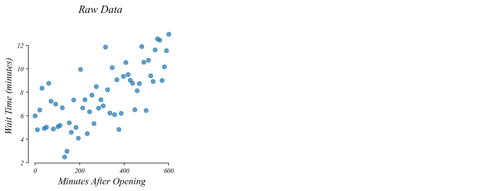
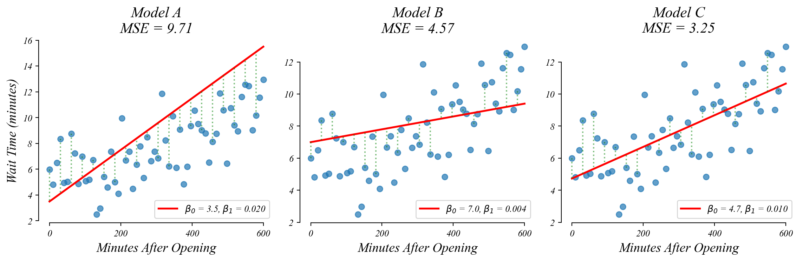
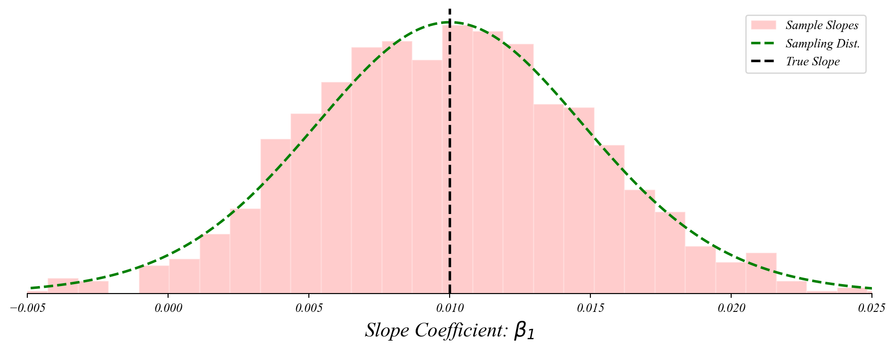
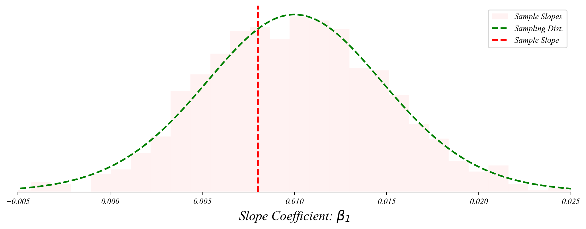

ECON 0150 | Economic Data Analysis
The economist’s data analysis stillset.
Part 4.1 | Numerical Predictors
GLM: bivariate data
Do people wait longer later in the day?
Lets compare two models.
GLM: bivariate data
Do people wait longer later in the day?
Lets compare two models.

GLM: bivariate data
Do people wait longer later in the day?
Lets compare two models.
> allowing a slope (β₁) improves model fit (MSE) when there’s a relationship
> the intercept is no longer the mean
> the slope (β₁) gives the best guess of the relationship between x and y
GLM: bivariate data
Do people wait longer later in the day?
Lets compare two models.
> but could this slope be just sampling error?
Bivariate GLM: sampling error
Like before, if we take many samples, we get slighly different slopes and slighly different fits.

Bivariate GLM: sampling distribution of slopes
The slope coefficient follows a normal distribution centered on the population slope.

> the slopes follow a normal distribution around the population relationship!
> this lets us perform a t-test on the slope!
Bivariate GLM: sampling distribution of slopes
The slope coefficient follows a normal distribution centered on the population slope.
> we don’t know the entire distribution, just our sample slope
Bivariate GLM: sampling distribution of slopes
The slope coefficient follows a normal distribution centered on the population slope.

> center the distribution on our null
> check the distance from the sample
Bivariate GLM: sampling distribution of slopes
The slope coefficient follows a normal distribution centered on the population slope.

> the p-value is the probability of something as far from the null as our sample
Bivariate GLM: sampling distribution of slopes
The slope coefficient follows a normal distribution centered on the population slope.
> a small p-value is evidence against the null hypothesis (\(\beta_1 = 0\))
> p-value: the ‘surprisingness’ of our sample
> the probability of seeing our sample by chance (if there is no relationship)
Exercise 4.1 |
Does wait time change throughout the day?
GLM: predictions
What wait time should we expect at noon?
Exercise 4.1 |
What wait time should we expect at noon?
GLM: interpretation
How much longer will we wait in one hour from now?
Exercise 4.1 |
How much longer will we wait in one hour from now?
The General Linear Model
GLM performs a t-test on all model coefficients.
Univariate (Part 3): \(y = \beta_0 + \epsilon\)
- Equivalent to a one-sample t-test
- Tests whether \(\beta_0 = \mu_0\) (default null)
Numerical Predictor: \(y = \beta_0 + \beta_1 x + \epsilon\)
- \(x\) is a numerical variable (like age, income, temperature, etc.)
- Tests both intercept (\(\beta_0 = 0\)) and slope (\(\beta_1 = 0\))
- Null hypothesis on slope: no relationship between x and y (\(\beta_1 = 0\))
The General Linear Model
GLM uses the idea of a t-test with any coefficient.
Categorical Predictor (next time): \(y = \beta_0 + \beta_1 x + \epsilon\)
- \(x\) is a categorical variable (like age, income, temperature, etc.)
- Equivalent to a two-sample t-test (when \(x\) is binary)
Multivariate GLM (Part 5):
- Adds more predictor variables: \(y = \beta_0 + \beta_1 x_1 + \beta_2 x_2 + ... + \varepsilon\)
- Each coefficient has its own t-test against the null that it equals zero
Economic Applications
GLM is the workhorse statistical tool in empirical economics.
Labor Economics: relationship between education and wages.
\[\text{wage} = \beta_0 + \beta_1 \text{education} + \varepsilon\]
Policy Analysis: relationship between minimum wages and employment.
\[\text{employment} = \beta_0 + \beta_1 \text{minimum_wage} + \varepsilon\]
Political Economy: relationship between neighbor’s party and voter turnout
\[\text{voted} = \beta_0 + \beta_1 \text{neighborhood_politics} + \varepsilon\]
Bivariate GLM: Numerical Predictors
Summary
GLM Framework:
- T-tests and regression are part of the same very flexible framework.
Numerical Predictors:
- Bivariate GLM extends the t-test by allowing continuous predictors.
Same Distribution:
- Coefficient estimates follow t-distributions centered on the true population values.
Same Interpretation:
- The p-values have the same interpretation: probability of seeing results this extreme if the null is true.
Looking Forward
Extending the GLM framework
Next Up:
- Part 4.2 | Bad Models
- Part 4.3 | Categorical Predictors
- Part 4.4 | Timeseries
- Part 4.5 | Causality
Later:
- Part 5.1 | Numerical Controls
- Part 5.2 | Categorical Controls
- Part 5.3 | Interactions
- Part 5.4 | Model Selection
> all built on the same statistical foundation